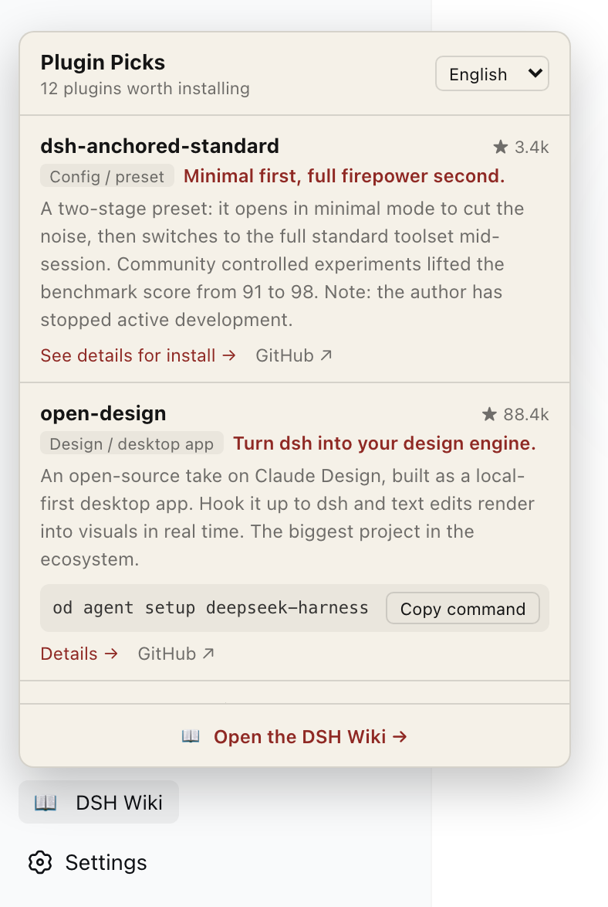

Lleva esta wiki a la barra lateral de dsh: 12 plugins seleccionados, comandos de instalación a un clic y ocho idiomas, sin salir de tu espacio de trabajo.

El panel ya instalado
Cuatro pasos
01
Primero, dsh
Si aún no tienes dsh, sigue primero la guía de despliegue. Necesitas Node.js 22.19 o superior.
Ejecuta esta línea en la terminal. Instala el plugin en el perfil web.
El plugin aún no está publicado. El comando de instalación aparecerá aquí cuando salga.
03
Reinicia la interfaz
Vuelve a ejecutar dsh web. Los plugins se cargan al arrancar.
El plugin aún no está publicado. El comando de instalación aparecerá aquí cuando salga.
04
Abre el panel
Aparece una entrada DSH Wiki al final de la barra lateral. Haz clic para ver los plugins.
Qué incluye
Doce plugins seleccionados, con qué hace cada uno, si vale la pena y sus trampas.
Los comandos se copian con un clic y se pegan directo en la terminal. Los que no caben en una línea enlazan a su página.
Cambia entre ocho idiomas cuando quieras y vuelve aquí para el detalle completo.
Dos advertencias
Si aparece ERR_MODULE_NOT_FOUND, pnpm 11 retuvo una versión de menos de diez días. Añade este paquete a minimumReleaseAgeExclude en el pnpm-workspace.yaml del perfil.
dsh sigue en vista previa para desarrolladores y el equipo advierte que habrá cambios incompatibles. Este plugin sigue las versiones de dsh, y desinstalarlo es una línea:
El plugin aún no está publicado. El comando de instalación aparecerá aquí cuando salga.
DSH Wiki · El radar de DSH · Un proyecto de ai798 Lab